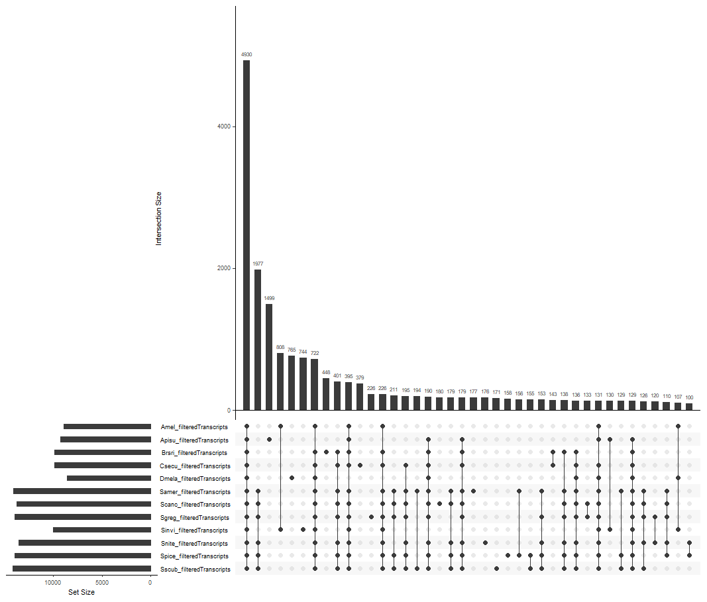
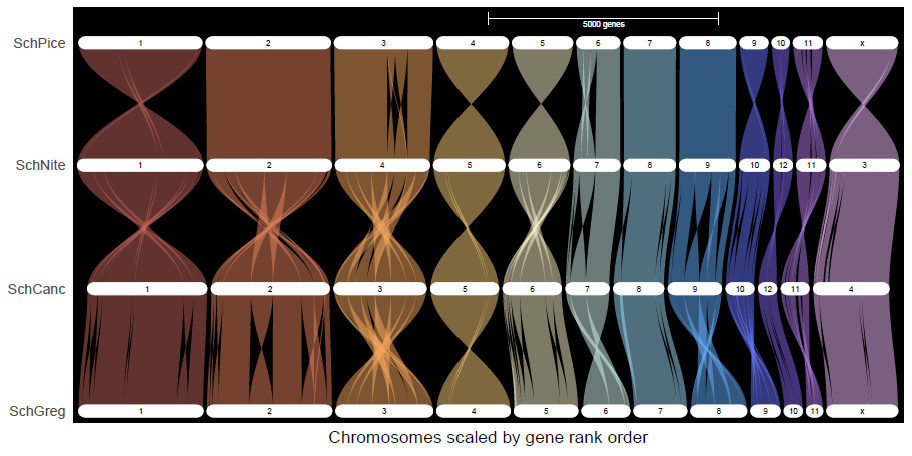
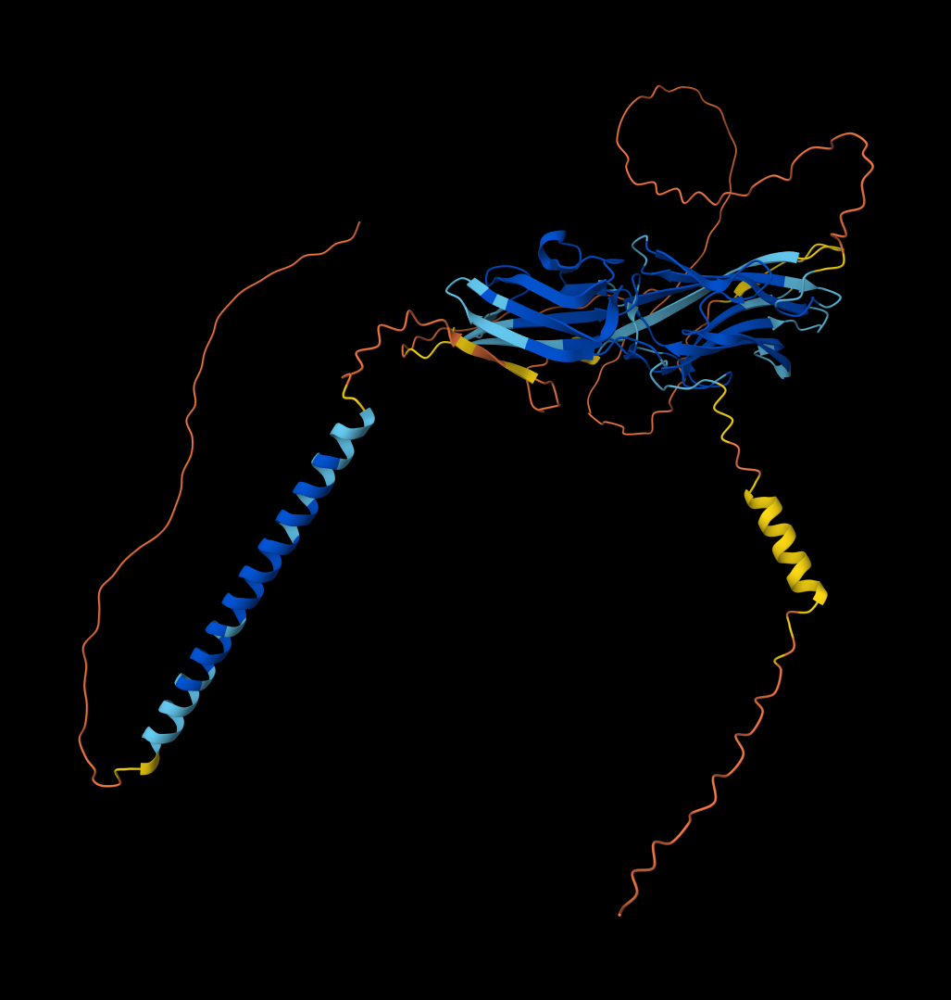
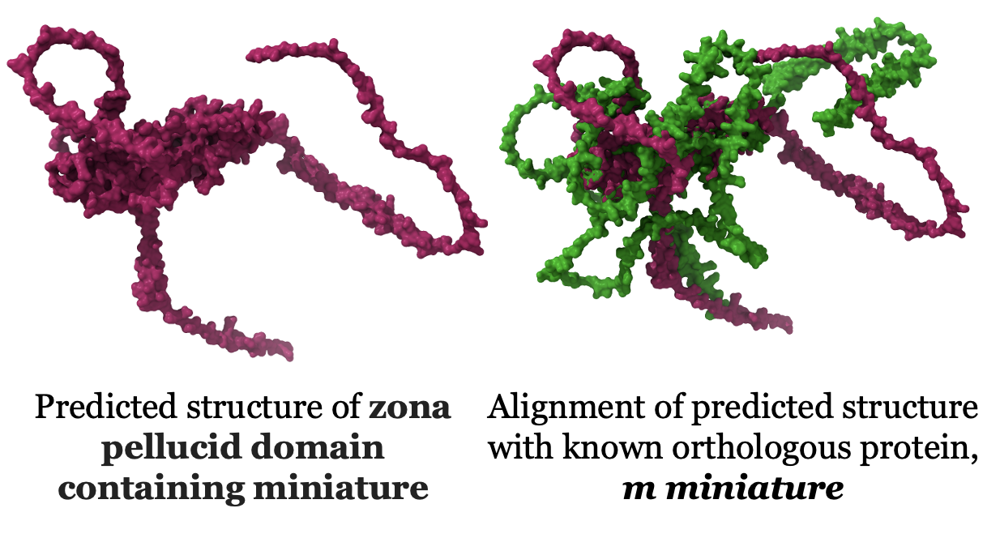

Last updated: 2025-04-10
Checks: 7 0
Knit directory: song-lab/
This reproducible R Markdown analysis was created with workflowr (version 1.7.1). The Checks tab describes the reproducibility checks that were applied when the results were created. The Past versions tab lists the development history.
Great! Since the R Markdown file has been committed to the Git repository, you know the exact version of the code that produced these results.
Great job! The global environment was empty. Objects defined in the global environment can affect the analysis in your R Markdown file in unknown ways. For reproduciblity it’s best to always run the code in an empty environment.
The command set.seed(20240605) was run prior to running
the code in the R Markdown file. Setting a seed ensures that any results
that rely on randomness, e.g. subsampling or permutations, are
reproducible.
Great job! Recording the operating system, R version, and package versions is critical for reproducibility.
Nice! There were no cached chunks for this analysis, so you can be confident that you successfully produced the results during this run.
Great job! Using relative paths to the files within your workflowr project makes it easier to run your code on other machines.
Great! You are using Git for version control. Tracking code development and connecting the code version to the results is critical for reproducibility.
The results in this page were generated with repository version a5e996b. See the Past versions tab to see a history of the changes made to the R Markdown and HTML files.
Note that you need to be careful to ensure that all relevant files for
the analysis have been committed to Git prior to generating the results
(you can use wflow_publish or
wflow_git_commit). workflowr only checks the R Markdown
file, but you know if there are other scripts or data files that it
depends on. Below is the status of the Git repository when the results
were generated:
Ignored files:
Ignored: .DS_Store
Ignored: .RData
Ignored: .Rhistory
Ignored: analysis/.DS_Store
Note that any generated files, e.g. HTML, png, CSS, etc., are not included in this status report because it is ok for generated content to have uncommitted changes.
These are the previous versions of the repository in which changes were
made to the R Markdown
(analysis/orthop-genomes-project.Rmd) and HTML
(docs/orthop-genomes-project.html) files. If you’ve
configured a remote Git repository (see ?wflow_git_remote),
click on the hyperlinks in the table below to view the files as they
were in that past version.
| File | Version | Author | Date | Message |
|---|---|---|---|---|
| html | f64b4d0 | ecbaker7-tamu | 2025-04-10 | Build site. |
| Rmd | 18a3014 | ecbaker7-tamu | 2025-04-10 | wflow_publish("analysis/orthop-genomes-project.Rmd") |
| html | 5f39d56 | ecbaker7-tamu | 2025-04-10 | Build site. |
| Rmd | 4c1a84f | ecbaker7-tamu | 2025-04-10 | wflow_publish("analysis/orthop-genomes-project.Rmd") |
| html | aaa78c4 | ecbaker7-tamu | 2025-01-16 | Build site. |
| html | a9233f8 | Emily Baker | 2024-12-16 | Build site. |
| html | b96dd10 | Emily Baker | 2024-10-01 | Build site. |
| html | 3731e9e | Emily Baker | 2024-09-16 | Build site. |
| html | 0c3ed6b | Emily Baker | 2024-09-16 | Build site. |
| html | 7914007 | Emily Baker | 2024-08-26 | Build site. |
| html | 9812272 | Emily Baker | 2024-07-31 | Build site. |
| html | f2bc75a | Emily Baker | 2024-07-15 | Build site. |
| html | c93686e | Emily Baker | 2024-07-15 | Build site. |
| html | 783cca3 | Emily Baker | 2024-07-03 | Build site. |
| Rmd | a60be8e | Emily Baker | 2024-07-03 | wflow_publish(c("analysis/barkdull.Rmd", "analysis/compare-genomes.Rmd", |
| html | 521747a | Emily Baker | 2024-06-30 | Build site. |
| html | 1126462 | Emily Baker | 2024-06-30 | Build site. |
| html | ad8ffae | Emily Baker | 2024-06-28 | Build site. |
| Rmd | f23c37e | Emily Baker | 2024-06-28 | wflow_publish(c("analysis/week4-notes.Rmd", "analysis/orthop-genomes-project.Rmd", |
| html | ce57758 | Emily Baker | 2024-06-24 | Build site. |
| html | 9e55929 | Emily Baker | 2024-06-18 | Build site. |
| Rmd | c570fc4 | Emily Baker | 2024-06-18 | wflow_publish("analysis/orthop-genomes-project.Rmd") |
| html | 89d12ce | Emily Baker | 2024-06-17 | updates |
| html | 27fd9e2 | Emily Baker | 2024-06-14 | Build site. |
| Rmd | dc19211 | Emily Baker | 2024-06-14 | wflow_publish("analysis/orthop-genomes-project.Rmd") |
| html | b4beadc | Emily Baker | 2024-06-13 | Build site. |
| Rmd | 829f4f4 | Emily Baker | 2024-06-13 | wflow_publish("analysis/orthop-genomes-project.Rmd") |
| Rmd | 940d850 | Emily Baker | 2024-06-12 | update |
| html | 940d850 | Emily Baker | 2024-06-12 | update |
| html | bfe7839 | Emily Baker | 2024-06-12 | Build site. |
| html | b6804ee | Emily Baker | 2024-06-11 | Build site. |
| html | e98ae4b | Emily Baker | 2024-06-11 | commit |
| html | 428b264 | Emily Baker | 2024-06-11 | Whole lot of changes |
| html | 60b2cd3 | Emily Baker | 2024-06-11 | Build site. |
| Rmd | cdc0a3d | Emily Baker | 2024-06-11 | wflow_publish("analysis/orthop-genomes-project.Rmd") |
| html | 04f9082 | Emily Baker | 2024-06-11 | Build site. |
| html | ad5585e | Emily Baker | 2024-06-11 | Build site. |
| html | e04bff4 | Emily Baker | 2024-06-11 | Build site. |
| Rmd | 7986080 | Emily Baker | 2024-06-10 | Table updates |
| html | 7986080 | Emily Baker | 2024-06-10 | Table updates |
| html | c5aff7f | Emily Baker | 2024-06-07 | Build site. |
| Rmd | a6bb130 | Emily Baker | 2024-06-07 | wflow_publish("analysis/orthop-genomes-project.Rmd") |
| html | 073754b | Emily Baker | 2024-06-07 | Build site. |
| html | 74e9f71 | Emily Baker | 2024-06-07 | Build site. |
| html | a152c58 | Emily Baker | 2024-06-07 | Build site. |
| html | b7cb8f3 | Emily Baker | 2024-06-07 | Build site. |
| Rmd | e161ab8 | Emily Baker | 2024-06-07 | Finished table |
| html | e161ab8 | Emily Baker | 2024-06-07 | Finished table |
| Rmd | d832578 | Emily Baker | 2024-06-06 | making it pretty |
| html | d832578 | Emily Baker | 2024-06-06 | making it pretty |
| html | a684372 | Emily Baker | 2024-06-06 | Build site. |
| Rmd | 4925061 | Emily Baker | 2024-06-06 | wflow_publish("analysis/orthop-genomes-project.Rmd") |
| html | 7065450 | Emily Baker | 2024-06-06 | Build site. |
| html | 8900595 | Emily Baker | 2024-06-06 | Build site. |
| Rmd | 259e0ee | Emily Baker | 2024-06-06 | Site changes |
For this part, I re-ran OrthoFinder with the data Maeva used here. My results are outlined in this table:

| Species | Order | Common_Name | Size | Origin | RefSeq_Annotation | Assembly_Method | Publication_Link |
|---|---|---|---|---|---|---|---|
| Schistocera gregaria | Orthoptera | Desert locust | 8.7 Gb | Samburu, Kenya | Y | HiFiASM v. 0.13-r308 | https://www.ncbi.nlm.nih.gov/datasets/genome/GCF_023897955.1/ |
| Schistocera americana | Orthoptera | American grasshopper | 9 Gb | St. Augustine, FL | Y | HiFiASM v. 0.15.4; 3D-DNA v. 210817; Juicebox Assembly Tools v. 1.11 | https://www.ncbi.nlm.nih.gov/datasets/genome/GCF_021461395.2/ |
| Schistocera nitens | Orthoptera | Vagrant locust | 8.8 Gb | Terlingua, TX | Y | HiFiASM v. 0.15.4; 3D-DNA v. 210817; Juicebox Assembly Tools v. 1.11 | https://www.ncbi.nlm.nih.gov/datasets/genome/GCF_023898315.1/ |
| Schistocera cancellata | Orthoptera | South American locust | 8.5 Gb | Argentina | Y | HiFiASM v. 0.15.4; 3D-DNA v. 210817; Juicebox Assembly Tools v. 1.11 | https://www.ncbi.nlm.nih.gov/datasets/genome/GCF_023864275.1/ |
| Schistocera serialis cubense | Orthoptera | Cuban bird grasshopper | 9.1 Gb | Islamorada, FL | Y | HiFiASM v. 0.15.4; 3D-DNA v. 210817; Juicebox Assembly Tools v. 1.11 | https://www.ncbi.nlm.nih.gov/datasets/genome/GCF_023864345.2/ |
| Schistocerca piceifrons | Orthoptera | Central American locust | 8.7 Gb | Yucatan, Mexico nr. Tizimin | Y | HiFiASM v. 0.15.4; 3D-DNA v. 210817; Juicebox Assembly Tools v. 1.11 | https://www.ncbi.nlm.nih.gov/datasets/genome/GCF_021461385.2/ |
| Locusta migratora | Orthoptera | Migratory locust | 6.3 Gb | Beijing, China | N | Hifiasm v. 0.14-r312; LACHESIS v. Dec-2017 | https://www.ncbi.nlm.nih.gov/datasets/genome/GCA_026315105.1/ |
| Meconaema thalassinum | Orthoptera | Oak bush-cricket | 9 Gb | United Kingdom | N | 29x PacBio data and Arima2 Hi-C | https://www.ncbi.nlm.nih.gov/datasets/genome/GCA_946902985.2/ |
| Zhengitettix transpicula | Orthoptera | Pygmy grasshopper | 993.6 Mb | Yizhou, Guangxi Providence, China | N | HIFIasm v. 1.8.0 | https://www.ncbi.nlm.nih.gov/datasets/genome/GCA_037074705.1/ |
| Balanococcus diminutus | Hemiptera | New Zealand flax mealybug | 313.1 Mb | United Kingdom | Y | PacBio & Arima2 | https://www.ncbi.nlm.nih.gov/datasets/genome/GCA_959613365.1/ |
| Nilaparvata lugens | Hemiptera | Brown planthopper | 1.1 Gb | Wuhan, China | Y | WTDGB v. 2.1, SmartDenovo v. 1.5, & HiC-Pro v 2.7.8 | https://www.ncbi.nlm.nih.gov/datasets/genome/GCF_014356525.2/ |
| Placoccus citri | Hemiptera | Citrus mealybug | 403.6 Mb | United Kingdom | Y | PacBio, Arima2 | https://www.ncbi.nlm.nih.gov/datasets/genome/GCF_950023065.1/ |
| Rhopalosiphum maidis | Hemiptera | Corn leaf aphid | 326 Mb | Ithaca, NY | Y | Canu v. 1.6 & Hi-C chromatin interation maps | https://www.ncbi.nlm.nih.gov/datasets/genome/GCF_003676215.2/ |
| Acyrthosiphon pisum | Hemiptera | Pea aphid | 533.6 Mb | Texas, USA | Y | HiRise v. Mar-2018 | https://www.ncbi.nlm.nih.gov/datasets/genome/GCF_005508785.2/ |
| Spodoptera frugiperda | Lepidoptera | Fall armyworm | 383.9 Mb | Australia | Y | CANU v. 2.2.0; PurgeDups v. 1.2.5; AllHiC v. 1; Racon v. 1.4.3; Masurca-Polca v. 4.0.9 | https://www.ncbi.nlm.nih.gov/datasets/genome/GCF_023101765.2/ |
| Plutella xylostella | Lepidoptera | Diamondback moth | 323.3 Mb | United Kingdom | Y | 77x PacBio data, 10X Genomics Chromium data, & Arima2 Hi-C data | https://www.ncbi.nlm.nih.gov/datasets/genome/GCF_932276165.1/ |
| Pieris rapae | Lepidoptera | Cabbage white | 256.4 Mb | United Kingdom | Y | 56x PacBio data, 10X Genomics Chromium data, & Arima Hi-C | https://www.ncbi.nlm.nih.gov/datasets/genome/GCF_905147795.1/ |
| Bicyclus anyana | Lepidoptera | Squinting bush brown | 457.2 Mb | United Kingdom | Y | 20x PacBio data & Arima2 Hi-C | https://www.ncbi.nlm.nih.gov/datasets/genome/GCF_947172395.1/ |
| Ostrinia nubilalis | Lepidoptera | European corn borer | 495.5 Mb | United Kingdom | Y | 44x PacBio data & Arima2 Hi-C | https://www.ncbi.nlm.nih.gov/datasets/genome/GCF_963855985.1/ |
| Vaneaa cardui | Lepidoptera | Painted Lady | 424.8 Mb | United Kingdom | Y | 25x PacBio data, 10X Genomics Chromium data, & Arima Hi-C | https://www.ncbi.nlm.nih.gov/datasets/genome/GCF_905220365.1/ |
| Pieris brassicae | Lepidoptera | Large cabbage white | 292.3 Mb | United Kingdom | Y | 92x PacBio data, 10X Genomics Chromium data, & Qiagen Hi-C | https://www.ncbi.nlm.nih.gov/datasets/genome/GCF_905147105.1/ |
| Pararge aegeria | Lepidoptera | Speckled wood butterfly | 516.6 Mb | West Salton Forest, Scotland | Y | 42x PacBio data, 10X Genomics Chromium data, & Arima Hi-C | https://www.ncbi.nlm.nih.gov/datasets/genome/GCF_905163445.1/ |
| Aricia agestis | Lepidoptera | Brown argus | 435.3 Mb | Romania | Y | 54x PacBio data, 10X Genomics Chromium data, & Arima Hi-C | https://www.ncbi.nlm.nih.gov/datasets/genome/GCF_905147365.1/ |
| Cydia fagiglandana | Lepidoptera | Beech moth | 555.1 Mb | United Kingdom | Y | 45x PacBio data & Arima2 Hi-C | https://www.ncbi.nlm.nih.gov/datasets/genome/GCF_963556715.1/ |
| Nymphalis io | Lepidoptera | European peacock butterfly | 384.2 Mb | United Kingdom | Y | 64x PacBio data, 10X Genomics Chromium data, & Qiagen Hi-C | https://www.ncbi.nlm.nih.gov/datasets/genome/GCF_905147045.1/ |
| Bicyclus anynana | Lepidoptera | Squinting bush brown | 457.2 Mb | United Kingdom | Y | 20x PacBio data and Arima2 Hi-C | https://www.ncbi.nlm.nih.gov/datasets/genome/GCF_947172395.1/ |
| Bacillus rossius redtenbacheri | Phasmatodea | European stick bug | 1.6 Gb | Ravenna, Italy | Y | HiFiASM v. 01.06.2021 | https://www.ncbi.nlm.nih.gov/datasets/genome/GCF_032445375.1/ |
| Dryococelus australis | Phasmatodea | Tree lobster | 3.4 Gb | Melbourne Zoo, Australia | N | WTDBG v. 2.5, HiRise v. JULY-2021 | https://www.ncbi.nlm.nih.gov/datasets/genome/GCA_029891345.1/ |
| Timema cristinae | Phasmatodea | Cristina’s timema | 955.5 Mb | California | N | Meraculous v. JUNE-2016; Dovetail HiRise v. JUNE-2016; LepMap2 - clustering of scaffolds in linkage groups using mapping families v. 2017 | https://www.ncbi.nlm.nih.gov/datasets/genome/GCA_002928295.1/ |
| Chrysoperla carnea | Neuroptera | (Species of) Common green lacewing | 560.2 Mb | United Kingdom | Y | 40x PacBio data, 10X Genomics Chromium data, & Arima Hi-C | https://www.ncbi.nlm.nih.gov/datasets/genome/GCF_905475395.1/ |
| Sisyra terminalis | Neuroptera | Spongefly / Spongillafly | 376.6 Mb | United Kingdom | N | 82x PacBio data and Arima2 Hi-C | https://www.ncbi.nlm.nih.gov/datasets/genome/GCA_958496175.1/ |
| Sisyra nigra | Neuroptera | Black spongillafly | 372.6 Mb | United Kingdom | N | 55x PacBio data and Arima2 Hi-C | https://www.ncbi.nlm.nih.gov/datasets/genome/GCA_958496155.1/ |
| Nineta flava | Neuroptera | N/A | 732.3 Mb | Tonbridge, England | N | 39x PacBio data and Arima2 Hi-C | https://www.ncbi.nlm.nih.gov/datasets/genome/GCA_963920215.1/ |
| Cloeon dipterum | Ephemeroptera | (Species of) Mayfly | 190.1 Mb | United Kingdom | Y | 89x PacBio data, 10X Genomics Chromium data, & Arima Hi-C | https://www.ncbi.nlm.nih.gov/datasets/genome/GCF_949628265.1/ |
| Siphlonurus alternatus | Ephemeroptera | (Species of) Mayfly | 455.8 Mb | United Kingdom | N | 53x PacBio data & Arima2 Hi-C | https://ncbi.nlm.nih.gov/datasets/genome/GCA_949825025.1/ |
| Ecdyonurus torrentis | Ephemeroptera | Large brook dun | 503.3 Mb | River Rye, Yorkshire, UK | N | 67x PacBio data & Arima2 Hi-C | https://www.ncbi.nlm.nih.gov/datasets/genome/GCA_949318235.1/ |
| Brahcyptera putata | Plecoptera | Northern February red stonefly | 436.5 Mb | United Kingdom(?) | N | 64x PacBio, 101x 10X Genomics Chromium, & Hi-C | https://www.ncbi.nlm.nih.gov/datasets/genome/GCA_907164805.1/ |
| Nemurella pictetii | Plecoptera | (Species of) Stonefly | 257 Mb | United Kingdom | N | 68x PacBio data, 10X Genomics Chromium data, & Arima2 Hi-C | https://www.ncbi.nlm.nih.gov/datasets/genome/GCA_921293315.2/ |
| Protonemura montana | Plecoptera | N/A | 258.5 Mb | United Kingdom | N | 83x PacBio data & Arima2 Hi-C | https://www.ncbi.nlm.nih.gov/datasets/genome/GCA_947568835.1/ |
| Nemoura dubitans | Plecoptera | N/A | 321 Mb | United Kingdom | N | 62x PacBio data, 10X Genomics Chromium data, & Arima Hi-C | https://www.ncbi.nlm.nih.gov/datasets/genome/GCA_921293005.1/ |
| Isoperla grammatica | Plecoptera | Common yellow sally stonefly | 874.6 Mb | United Kingdom | N | 34x PacBio data, 10X Genomics Chromium data, & Arima2 Hi-C | https://www.ncbi.nlm.nih.gov/datasets/genome/GCA_945910005.1/ |
| Leuctra nigra | Plecoptera | Black needle fly | 536.3 Mb | United Kingdom | N | 32x PacBio data & Arima2 Hi-C | https://www.ncbi.nlm.nih.gov/datasets/genome/GCA_934045905.1/ |
| Brachyptera risi | Plecoptera | (Species of) Stonefly | 680.2 Mb | United Kingdom | N | 45x PacBio data & Arima2 Hi-C | https://www.ncbi.nlm.nih.gov/datasets/genome/GCA_964007535.1/ |
| Hymenopus coronatus | Mantodea | Walking flower mantis | 3.1 Gb | Xishuangbanna, China | N | Hifiasm v. 0.14.2 | https://www.ncbi.nlm.nih.gov/datasets/genome/GCA_030762935.1/ |
| Tenodera sinensis | Mantodea | Chinese praying mantis | 2.7 Gb | Guangzhou, China | N | Hifiasm v. 0.14.2 | https://ncbi.nlm.nih.gov/datasets/genome/GCA_030765045.1/ |
| Mantis religiosa | Mantodea | Praying mantis | 3.7 Gb | Guangzhou, China | N | Hifiasm v. 0.14.2 | https://www.ncbi.nlm.nih.gov/datasets/genome/GCA_030765055.1/ |
| Deroplatys truncata | Mantodea | Dead leaf mantis | 4.3 Gb | Cameron, Malaysia | N | Hifiasm v. 0.14.2 | https://www.ncbi.nlm.nih.gov/datasets/genome/GCA_030765065.1/ |
| Metallyticus violacea | Mantodea | Iridescent bark mantis | 2.3 Gb | Kuala Lumpur, Malaysia | N | Hifiasm v. 0.14.2 | https://www.ncbi.nlm.nih.gov/datasets/genome/GCA_030762175.1/ |
| Ectobius pallidus | Blattodea | Tawny cockroach | 2.1 Gb | United Kingdom | N | 51x PacBio data and Arima2 Hi-C | https://www.ncbi.nlm.nih.gov/datasets/genome/GCA_964059185.1/ |
| Apis mellifera | Hymenoptera | Honey bee | 225.2 Mb | USA | Y | PacBio; 10X Chromium; Phase Genomics HiC; Bionano; FALCON v. 0.5.0; Arcs v. 1.0.1; Links v. 1.8.5; BioNano Solve v. 3.1 | https://www.ncbi.nlm.nih.gov/datasets/genome/GCF_003254395.2/ |
| Aleiodes testaceus | Hymenoptera | Common mummy wasp | 110.7 Mb | United Kingdom | N | 199x PacBio data and Arima2 Hi-C | https://www.ncbi.nlm.nih.gov/datasets/genome/GCF_009193385.2/ |
| Bombus terrestris | Hymenoptera | Buff-tailed bumblebee | 393 Mb | United Kingdom | Y | 57x PacBio data, 10X Genomics Chromium data, and Arima Hi-C data | https://www.ncbi.nlm.nih.gov/datasets/genome/GCF_910591885.1/ |
| Order | Total_num_assemblies | Num_chrom_length_assemblies | Number_annotated |
|---|---|---|---|
| Orthoptera | 28 | 11 | 6 |
| Hemiptera | 214 | 74 | 195 |
| Lepidoptera | 2304 | 580 | 43 |
| Phasmatodea | 21 | 4 | 1 |
| Neuroptera | 11 | 5 | 1 |
| Ephemeroptera | 10 | 3 | 2 |
| Plecoptera | 18 | 7 | 0 |
| Mantodea | 8 | 6 | 0 |
| Blattodea | 14 | 1 | 2 |
| Hymenoptera | 763 | 233 | 83 |
In order to narrow down this data, I chose all schistocera members in Orthoptera that had available genomes as the reference species and I chose the outgroups based on whether or not the species had demonstrated phenotypic plasticity, as well as supplemented with species from the same orders as the phenotypically plastic species but had not necessarily shown any plasticity themselves. I consulted this NCBI page and the associated papers to make these selections that are shown in the table below.
| Species | Order | Common_Name | Ref_or_Outgroup | BUSCO_Analysis | Genome_Size | Genes_Annotated | Protein_Coding | NCBI_link |
|---|---|---|---|---|---|---|---|---|
| Schistocera gregaria | Orthoptera | Desert locust | R | 96% | 8.7 Gb | 99,467 | 19,799 | https://www.ncbi.nlm.nih.gov/datasets/genome/GCF_023897955.1/ |
| Schistocera americana | Orthoptera | American grasshopper | R | 96.6% | 9 Gb | 81,274 | 17,662 | https://www.ncbi.nlm.nih.gov/datasets/genome/GCF_021461395.2/ |
| Schistocera nitens | Orthoptera | Vagrant locust | R | 96.4% | 8.8 Gb | 72,560 | 17,500 | https://www.ncbi.nlm.nih.gov/datasets/genome/GCF_023898315.1/ |
| Schistocera cancellata | Orthoptera | South American locust | R | 96.3% | 8.5 Gb | 103,533 | 16,907 | https://www.ncbi.nlm.nih.gov/datasets/genome/GCF_023864275.1/ |
| Schistocera serialis cubense | Orthoptera | Cuban bird grasshopper | R | 96.8% | 9.1 Gb | 75,810 | 17,237 | https://www.ncbi.nlm.nih.gov/datasets/genome/GCF_023864345.2/ |
| Schistocerca piceifrons | Orthoptera | Central American locust | R | 94.8% | 8.7 Gb | 96,806 | 17,490 | https://www.ncbi.nlm.nih.gov/datasets/genome/GCF_021461385.2/ |
| Locusta migratora | Orthoptera | Migratory locust | OG | N/A | 6.3 Gb | N/A | N/A | https://www.ncbi.nlm.nih.gov/datasets/genome/GCA_026315105.1/ |
| Acyrthosiphon pisum | Hemiptera | Pea aphid | OG | N/A | 533.6 Mb | 20,307 | 17,681 | https://www.ncbi.nlm.nih.gov/datasets/genome/GCF_005508785.2/ |
| Rhopalosiphum maidis | Hemiptera | Corn leaf aphid | OG | 97.5% | 326 Mb | 13,624 | 12,060 | https://www.ncbi.nlm.nih.gov/datasets/genome/GCF_003676215.2/ |
| Apis mellifera | Hymenoptera | Honey bee | OG | 98.6% | 225.2 Mb | 12,398 | 9,935 | https://www.ncbi.nlm.nih.gov/datasets/genome/GCF_003254395.2/ |
| Bombus terrestris | Hymenoptera | Buff-tailed bumblebee | OG | 98.5% | 393 Mb | 13,398 | 10,310 | https://www.ncbi.nlm.nih.gov/datasets/genome/GCF_910591885.1/ |
| Bicyclus anynana | Lepidoptera | Squinting bush brown | OG | 98% | 457.2 Mb | 15,144 | 13,577 | https://www.ncbi.nlm.nih.gov/datasets/genome/GCF_947172395.1/ |
To begin synteny analysis, I ran GENESPACE using 3 swarming Schistocerca species (including S. gregaria) and 1 non-swarming. The results are as follows:

I am currently working with the TAMU HPRC team to configure this pipeline in order to run an analysis with all 6 Schistocerca genomes as well as our outgroups.
Through our orthology analysis, we found an uncharacterized hub gene in S. gregaria that produced a protein called zona pellucid domain containing miniature (ZPDCM). This protein is orthologous to one found in D. melanogaster called m miniature. In D. melanogaster, m miniature is involved in the regulation of wing development. In S. gregaria ZPDCM is upregulated in gregarious individuals, but in the head rather than the thorax. Furthermore, this protein is found in the other Schistocerca species, but exhibits similar expression patterns in the 2 other swarming species, S. cancellata and S. piceifrons. The predicted model using AlphaFold is pictured below, as well as an alignment with the ortholgous protein from D. melanogaster.


sessionInfo()R version 4.4.2 (2024-10-31)
Platform: aarch64-apple-darwin20
Running under: macOS Sequoia 15.1
Matrix products: default
BLAS: /Library/Frameworks/R.framework/Versions/4.4-arm64/Resources/lib/libRblas.0.dylib
LAPACK: /Library/Frameworks/R.framework/Versions/4.4-arm64/Resources/lib/libRlapack.dylib; LAPACK version 3.12.0
locale:
[1] en_US.UTF-8/en_US.UTF-8/en_US.UTF-8/C/en_US.UTF-8/en_US.UTF-8
time zone: America/New_York
tzcode source: internal
attached base packages:
[1] stats graphics grDevices utils datasets methods base
other attached packages:
[1] kableExtra_1.4.0 knitr_1.49 workflowr_1.7.1
loaded via a namespace (and not attached):
[1] jsonlite_1.8.9 compiler_4.4.2 promises_1.3.2 Rcpp_1.0.14
[5] xml2_1.3.6 stringr_1.5.1 git2r_0.35.0 callr_3.7.6
[9] later_1.4.1 jquerylib_0.1.4 systemfonts_1.2.1 scales_1.3.0
[13] yaml_2.3.10 fastmap_1.2.0 R6_2.6.1 tibble_3.2.1
[17] munsell_0.5.1 rprojroot_2.0.4 svglite_2.1.3 bslib_0.9.0
[21] pillar_1.10.1 rlang_1.1.5 cachem_1.1.0 stringi_1.8.4
[25] httpuv_1.6.15 xfun_0.51 getPass_0.2-4 fs_1.6.5
[29] sass_0.4.9 viridisLite_0.4.2 cli_3.6.4 magrittr_2.0.3
[33] ps_1.8.1 digest_0.6.37 processx_3.8.5 rstudioapi_0.17.1
[37] lifecycle_1.0.4 vctrs_0.6.5 evaluate_1.0.3 glue_1.8.0
[41] whisker_0.4.1 colorspace_2.1-1 rmarkdown_2.29 httr_1.4.7
[45] tools_4.4.2 pkgconfig_2.0.3 htmltools_0.5.8.1